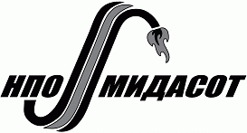

MITEX 2026 · Россия · Стенд 7B1502
МИДАСОТ НПО
Карточка проверена 10 ноября 2026, 09:25 · Источник ↗ · Снимок оригинальной карточки ↗
О компании
Группа компаний «МИДАСОТ», образована в 1992г. Специализируется в поставке газопламенного, электросварочного оборудования и расходных материалов BRIMA
Контакты
Все контактные сведения из карточки
Контакты г. Москва, Золоторожский Вал, дом 32 строение 11, пом.14, офис В Веб-сайт: https://www.midasot.ru E-mail: info@midasot.ru Телефон: +7 (495)7995800
Все рубрики участника
Mitex - Рубрикатор
- 3. Сварочное оборудование, расходные материалы, СИЗ
Зал
- Зал № 7
Участник выставки
- MITEX
Видео, каталоги и документы
В доступной карточке нет видео или документов. Смотрите сайт участника.